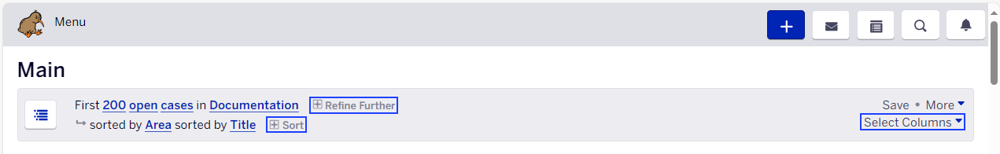

FogBugz
FogBugz ia a project management software which helps you spend less time on managing, and more on creating your digital masterpiece.
Setup Guide:
Step 1: Initiate an email request to Mr. Sanjiv for FogBugz access.
Step 2: After you have given access, an email notification will be received along with password change link.
Step 3: Change the password and Log in to Fogbugz.
Step 4: Using Refine Further option, select Documentation project.
Step 5: Using Sort option, select Area.
Step 6: To customize the fogbugz column, click Select Columns and choose required columns from the list.

Step 7: Based on priority level, review and select a documentation case assigned for document creation/revision.